Laporan Praktikum 7 Pemrograman Web
Konfigurasi Laravel
Hanifah Larama Agasi - 2311531002
Detail Laporan
A. Pendahuluan
Laravel adalah framework PHP yang populer yang dikembangkan oleh Taylor Otwell. Ini adalah proyek open source yang dimaksudkan untuk membuat aplikasi berbasis web dengan arsitektur Model-View-Controller (MVC).
Beberapa fungsi Laravel:
- Eloquent ORM (Object-Relational Mapping): Memudahkan interaksi dengan database menggunakan sintaks PHP yang intuitif. Anda dapat mendefinisikan model untuk setiap tabel database dan melakukan operasi CRUD (Create, Read, Update, Delete) dengan mudah. Eloquent juga mendukung relasi antar tabel (one-to-one, one-to-many, many-to-many).
- Blade Templating Engine: Sistem templating yang sederhana namun powerful, memungkinkan Anda menggunakan sintaks PHP dalam template HTML dengan cara yang bersih dan aman. Blade menyediakan direktif-direktif seperti @if, @foreach, @extends, @yield, dan komponen untuk membuat tampilan dinamis.
- Artisan Console: Command-line interface (CLI) yang disertakan dengan Laravel. Artisan menyediakan banyak perintah berguna untuk otomatisasi tugas-tugas umum seperti membuat model, migration, controller, seeder, menjalankan pengujian, membersihkan cache, dan banyak lagi.
- Routing: Sistem perutean yang fleksibel memungkinkan Anda mendefinisikan URL aplikasi Anda dan mengaitkannya dengan controller atau closure functions. Laravel mendukung berbagai jenis rute dan middleware untuk mengontrol akses.
- Form Request Validation: Memudahkan proses validasi data yang dikirim melalui form. Anda dapat membuat kelas Form Request khusus dengan aturan validasi yang jelas dan Laravel akan secara otomatis menangani proses validasi dan menampilkan pesan kesalahan.
- Security: Laravel dibangun dengan mempertimbangkan keamanan. Beberapa fitur keamanan bawaan meliputi proteksi terhadap CSRF (Cross-Site Request Forgery), XSS (Cross-Site Scripting), dan SQL injection.
- Authentication & Authorization: Menyediakan sistem otentikasi (login, registrasi, lupa kata sandi) dan otorisasi (hak akses pengguna) yang mudah diimplementasikan. Laravel Breeze dan Jetstream menyediakan scaffolding UI untuk fitur-fitur ini.
- Testing: Dukungan bawaan untuk berbagai jenis pengujian, termasuk unit testing, integration testing, dan end-to-end testing. Laravel menyediakan helper functions dan assertion methods untuk memudahkan penulisan tes.
- Queues: Sistem antrian yang memungkinkan Anda menunda tugas-tugas yang memakan waktu (seperti pengiriman email atau pemrosesan data) dan menjalankannya di latar belakang. Ini meningkatkan responsivitas aplikasi Anda.
- Caching: Mendukung berbagai sistem caching (seperti Redis, Memcached, file) untuk meningkatkan performa aplikasi dengan menyimpan data yang sering diakses dalam memori.
- Events & Listeners: Implementasi dari pola Observer, memungkinkan Anda membuat event dan listener untuk menjalankan kode tertentu ketika event tersebut terjadi dalam aplikasi Anda.
- Notifications: Memudahkan pengiriman notifikasi ke berbagai saluran, seperti email, SMS, database, atau layanan pihak ketiga.
- Broadcasting: Memungkinkan Anda melakukan siaran event secara real-time melalui WebSockets. Ini berguna untuk fitur seperti live chat atau notifikasi real-time.
- Broadcasting: Memungkinkan Anda melakukan siaran event secara real-time melalui WebSockets. Ini berguna untuk fitur seperti live chat atau notifikasi real-time.
- Task Scheduling: Memungkinkan Anda menjadwalkan tugas-tugas cron menggunakan sintaks yang ekspresif dalam kode PHP Anda.
- Passport (OAuth2 Server): Paket resmi untuk mengimplementasikan otentikasi OAuth2, memungkinkan aplikasi Anda menjadi penyedia otentikasi untuk aplikasi lain.
- Sanctum (API Authentication): Paket ringan untuk mengimplementasikan sistem otentikasi berbasis token untuk Single-Page Applications (SPAs), mobile applications, dan simple APIs.
- Socialite (Social Authentication): Memudahkan integrasi otentikasi dengan berbagai penyedia layanan OAuth seperti Facebook, Twitter, Google, dan lainnya.
- Filesystem: Abstraksi untuk berinteraksi dengan berbagai sistem penyimpanan file, baik lokal maupun cloud (seperti Amazon S3 atau Google Cloud Storage).
- Mail: Memudahkan pengiriman email dengan dukungan untuk berbagai driver seperti SMTP, Mailgun, dan Amazon SES.
- Pusher (Realtime Services): Integrasi mudah dengan layanan Pusher untuk menambahkan fitur realtime ke aplikasi Anda.
- Localization: Memudahkan pembuatan aplikasi multibahasa dengan fitur untuk mengelola terjemahan.
- Packages: Ekosistem paket yang kaya dan berkembang pesat melalui Composer, memungkinkan Anda dengan mudah menambahkan fungsionalitas tambahan ke aplikasi Anda.
B. Tujuan Praktikum
Tujuan praktikum ini yaitu mampu installasi Laravel, membuat project baru Laravel, mengenal struktur Laravel, konsep MVC laravel.
C. Langkah-langkah
1. Sebelum memulai proyek Laravel pastikan 12 syarat ini sudah terpenuhi dan install beberapa tools yang perlukan yaitu Git, Composer dan Cmder (khusus windows)
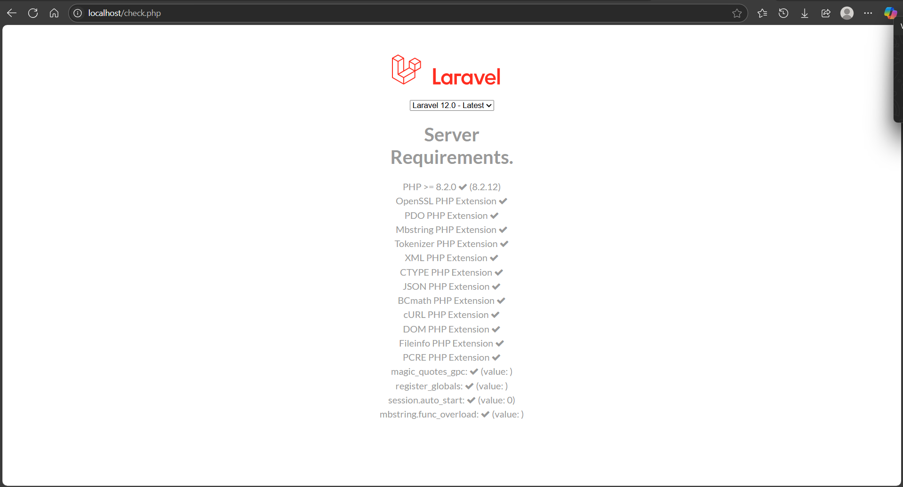
2. Kunjungi https://www.apachefriends.org/index.html untuk menginstal program XAMPP. Kita dapat menggunakan perintah berikut untuk mengecek PHP yang sudah terinstall dari XAMPP jika sudah terinstal:
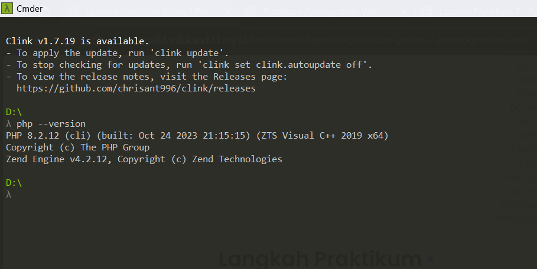
3. Setelah itu, pasang Composer di https://getcomposer.org/Composer-Setup.exe. Composer adalah pengendali paket PHP dan digunakan untuk menambahkan paket yang dibutuhkan selama pengembangan. Install wizard setup sesuai instruksi. Setelah proses instalasi selesai, kita dapat menggunakan perintah berikut untuk melihat apakah Composer telah terinstal:
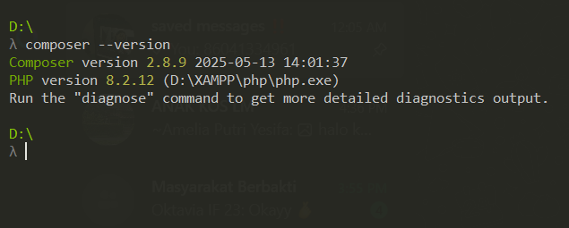
4. Kemudian, buka Git di https://git-scm.com/downloads/win dan ikuti instruksi langkah wizard instalasi yang diberikan. Setelah selesai, kita dapat mengecek Git yang telah terinstall dengan perintah berikut:
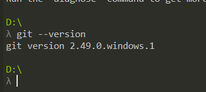
5. Kemudian, install node.js dan npm di https://nodejs.org/. Node JS pada Laravel berfungsi untuk menangani masalah frontedn dan build asset UI (Library UI). Install sesuai ketentuan langkah wizard setup yang diberikan. Setelah instalasi, kita bisa mengecek node dan npm yang telah terinstall dengan command:
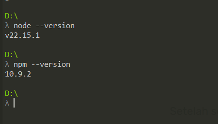
Setelah selesai melakukan semua instalasi tersebut maka bisa lakukan pengecekan agar melihat semua persyaratan apakah sudah terpenuhi atau tidak, semua persyaratannya bisa dillihat pada langkah pertama
6. Kita kemudian akan membuat proyek Laravel. Kita bisa membuatnya dengan installer atau composer.
- Laravel Installer
- Composer
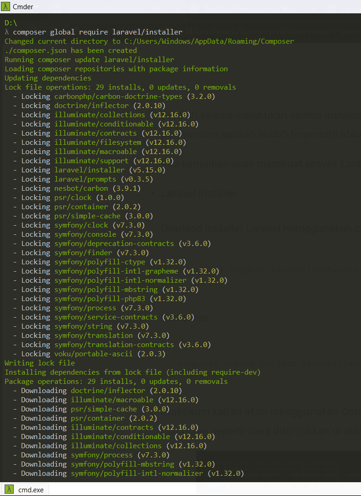
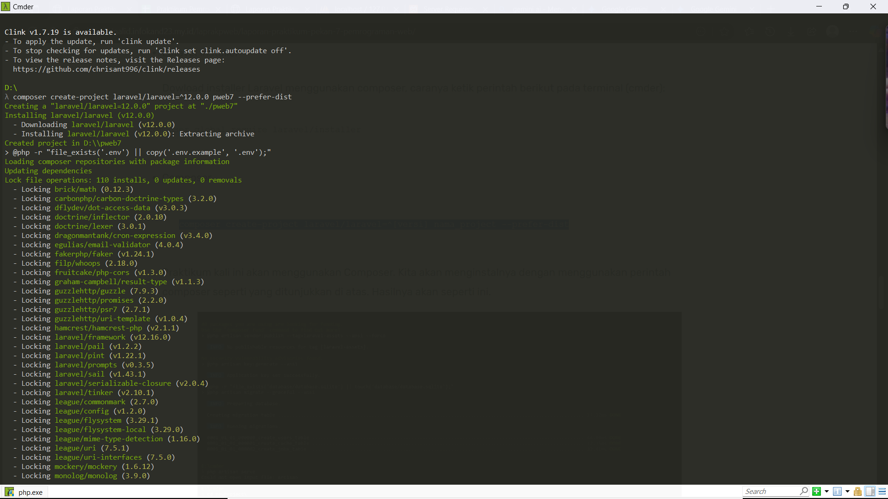
7. Praktikum kali ini akan menggunakan Composer. Kita akan menginstalnya dengan menggunakan perintah composer seperti yang ditunjukkan di atas. Hasilnya akan seperti ini.
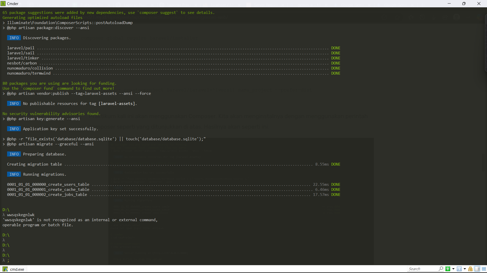
8. Setelah dilakukannya instalasi, maka bukalah folder laravel tersebut di VSCode dan jalankan di terminal dengan kode seperti ini
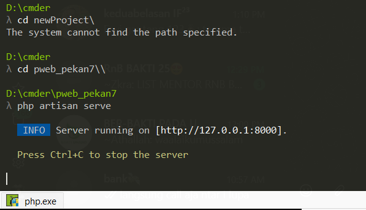
untuk melihat hasilnya, bisa melakukannya dengan cara ctrl + klik pada link yg diberikan tersebut dan hasilnya bisa dilihat pada browser seperti ini :
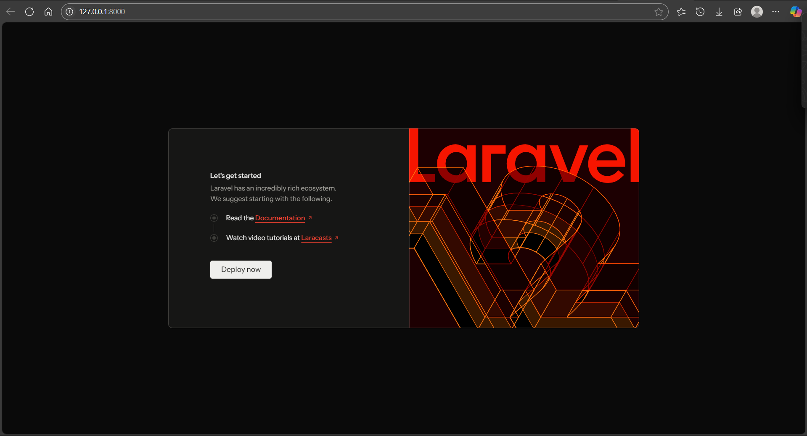
9. Yang akan dilakukan selanjutnya adalah menjalankan web yang sudah dibuat dengan cara pergi ke routes/web.php dan tambahkan kode berikut:
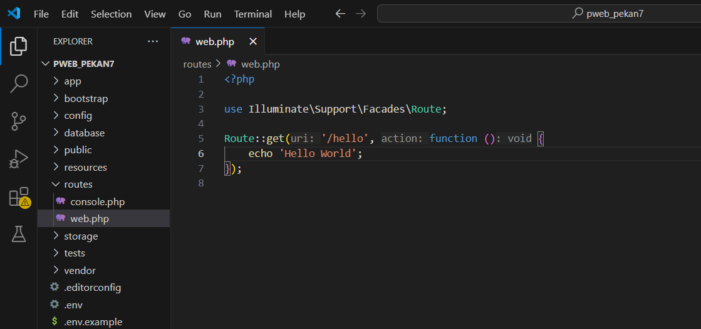
10. Untuk mengakses hasil routing, pergi ke http://127.0.0.1:8000/helo. Hasilnya akan berikut:
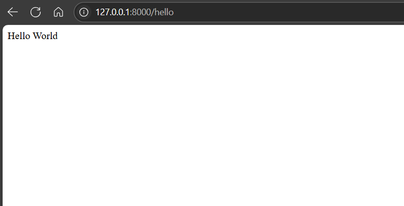